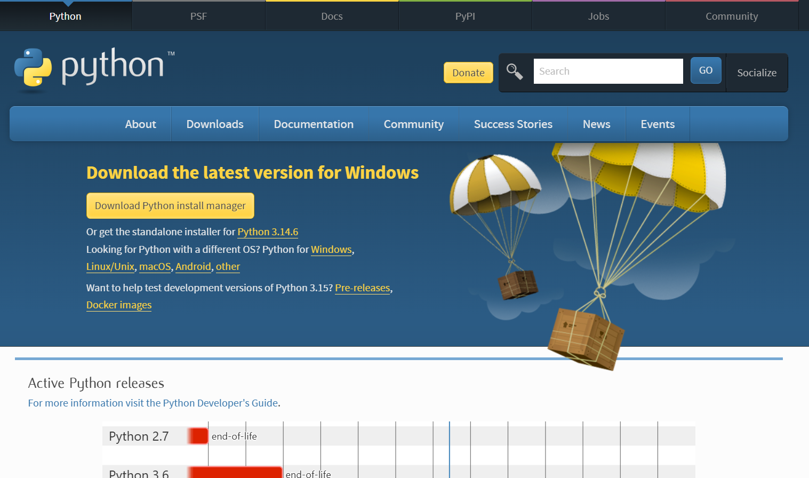
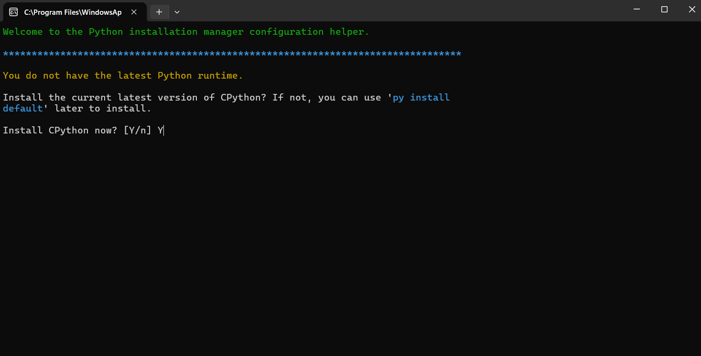
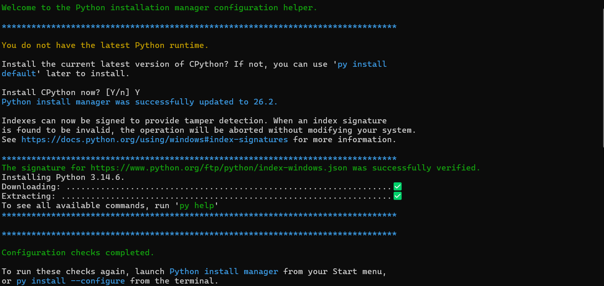

Instalación de Python en Windows
Antes de empezar a programar en Python en Windows, es necesario realizar una instalación correcta para asegurarte de que el entorno funcione sin errores. En esta guía te explicamos, paso a paso y de forma sencilla, cómo descargar e instalar Python desde la página oficial, cómo configurar las variables del sistema y cómo comprobar que todo está listo para empezar a programar. Si sigues estos pasos, tendrás Python funcionando en tu ordenador en pocos minutos y podrás empezar a crear tus primeros programas sin complicaciones.
Paso 1:Ir a la página oficial de Python
Vamos a visitar la página www.python.org/downloads/ y vanis a descargar desde el boton amarillo el último python install manager.

Paso 2: Instalarlo
Ejecutaremos el ejecutable descargado, aparecera un cuadro de dialogo seleccionaremos instalar la última version de python y se nos abrira la terminal donde deberemos de verificar la instalación:

Apareceran los siguientes textos verificando la instalación y dando acceso a la documentación oficial de python.


Ya tienes Python instalado en Windows, ahora puedes continuar con tu aprendizaje y empezar a programar de verdad.